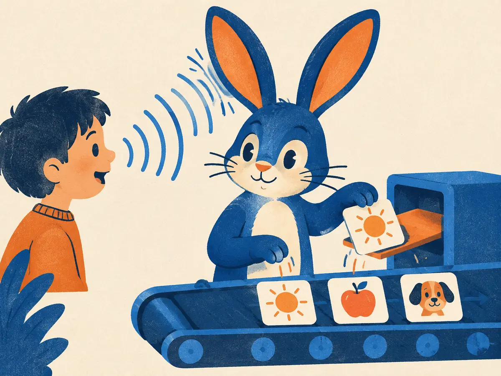

Speech recognition: CTC to Whisper
Speech arrives as 100 frames a second; its transcript is a dozen letters. Nobody tells you which frames belong to which letter. This lesson follows how speech recognition solved that alignment problem, from hand-built pipelines to CTC, attention, self-supervised pretraining and Whisper, and how we score the results.
By the end you can
- Apply the CTC collapse rule and explain why the blank token is needed.
- Explain how CTC training sums over alignments, and how attention models and RNN-T differ from it.
- Describe Whisper's input, architecture and task tokens, and compute a word error rate by hand.
Guess first. Being wrong now helps the right answer stick.
A one-second recording becomes 100 frames; its transcript "hello" has 5 letters. What makes training a frame-by-frame letter classifier hard?
- There are too few frames to fit 5 letters
- We don't know which frames belong to which letter; the transcript has no timings
- Letters can't be predicted from audio
- Softmax can't output letters
The reference transcript has 4 words; the system gets one of them wrong (a substitution). What is the word error rate?
- 4%
- 75%
- 25%
- 1%
Before deep learning: pipelines and the alignment problem
For roughly thirty years, from the 1980s to the early 2010s, speech recognizers were pipelines of separately built parts. An acoustic model scored short frames of audio features against the states of hidden Markov models (HMMs), with Gaussian mixture models (GMMs) describing what each state sounds like. A hand-written pronunciation lexicon mapped words to phonemes, an n-gram language model scored word sequences, and a search decoder combined them all. In 2012, Hinton et al. showed that replacing the GMMs with deep neural networks cut error rates substantially; these "hybrid" DNN-HMM systems ran most products for the next few years.
Hybrids still needed a frame-level target for every frame, obtained by forced alignment with an older model. That's the core difficulty:
- At 100 frames per second, saying "hello" might take 40 frames. The transcript has 5 letters and no timings.
- Sounds have different lengths (vowels stretch, stops are short), and silence sits between words.
- A plain classifier needs one label per frame, so you must invent an alignment before you can train.
In 2014, Baidu's Deep Speech (Hannun et al., 2014) skipped the pipeline: one recurrent network read spectrogram frames and directly output characters, trained end to end on thousands of hours of speech. The trick that made it possible, without any alignment, was a loss from 2006: CTC.
What did classic hybrid systems need that end-to-end CTC training does not?
- A frame-by-frame alignment of the transcript, produced by an earlier model
- Audio features computed from frames
- A neural network
- Transcribed training data
CTC: blanks and the collapse rule
Connectionist Temporal Classification (Graves et al., 2006) lets the network emit one symbol per frame, from the alphabet plus one extra symbol, the blank (written ε or _), meaning "nothing new here". A frame-level output sequence is called an alignment or path. To turn a path into text, apply the collapse rule $\mathcal{B}$:
- Merge repeats: runs of the same symbol become one (hh → h).
- Drop blanks.
The order matters. Because repeats are merged before blanks are dropped, a blank between two identical letters keeps them apart. That's the only way to spell a double letter:
hhe_ll_loo__→ merge →he_l_lo_→ drop → hellohhelllloo(no blank) → merge →helo. The double l is lost._cc_aa_t_→ merge →_c_a_t_→ drop → cat
Explain like I'm 5

A rabbit with huge ears listens to a child talking. Every tick of a clock, the rabbit may drop a picture tile on a conveyor belt: a sun when it hears "sun", an apple for "apple", a dog for "dog". If it hears nothing new, it drops nothing.
When the child says "suuun" slowly, the rabbit might drop three sun tiles in a row, so we squash a row of the same tile into one. And if the child really says "sun, sun", the rabbit leaves an empty gap between the two, so we know there were two.
Where it breaks: the real model doesn't drop one sure tile per tick. It gives a probability to every tile at every tick, and training adds up all the ways of dropping tiles that spell the right sentence.
A network's per-frame best symbols are bb_oo_okk (9 frames).
- After merging repeats, how many symbols remain (blanks included)?
- After dropping blanks, how many letters does the transcript have?
- If the frames were
bb_ooookkinstead (no blank between the o's), how many letters?
Which frame sequence collapses to "too"?
tt_ooo__t_oooot_oo_o_ttoo__
t_oo_o_ → merge → t_o_o_ → drop → "too". The others have no blank between the o's, so they collapse to "to".Training CTC: summing over every alignment
We still don't know the right alignment, and CTC never picks one. For each frame $t$ the network outputs a softmax $p_t(\cdot)$ over the symbols. Assuming frames are conditionally independent given the audio $x$, a path $a = (a_1, \dots, a_T)$ has probability $\prod_t p_t(a_t)$, and the probability of a transcript $y$ is the sum over every path that collapses to it:
$$P(y \mid x) = \sum_{a \,\in\, \mathcal{B}^{-1}(y)} \; \prod_{t=1}^{T} p_t(a_t), \qquad \mathcal{L}_{\text{CTC}} = -\log P(y \mid x)$$$\mathcal{B}^{-1}(y)$ is the set of all frame paths that collapse to $y$; $T$ is the number of frames. There can be astronomically many paths, but a dynamic-programming forward algorithm (like the one for HMMs) computes the sum in time proportional to $T \times |y|$. Gradients flow through it, so the model learns its own alignments.
Worked example
Two frames, symbols {a, blank}, target "a". At frame 1, $p(\text{a}) = 0.6$; at frame 2, $p(\text{a}) = 0.7$ (so blank gets 0.4 and 0.3).
- Paths that collapse to "a":
aa,a_,_a. (__collapses to nothing.) - Their probabilities: $0.6 \times 0.7 = 0.42$, $\;0.6 \times 0.3 = 0.18$, $\;0.4 \times 0.7 = 0.28$.
- $P(\text{"a"}) = 0.42 + 0.18 + 0.28 = 0.88$, so the loss is $-\ln 0.88 \approx 0.128$ nats.
Same setup, but now $p(\text{a}) = 0.5$ at frame 1 and $0.8$ at frame 2.
- Probability of the path
aa: - Probability of
_a: - $P(\text{"a"})$, summing all three paths:
Decoding is simpler. Greedy decoding takes the most likely symbol per frame and collapses (exactly what the animation showed). Beam search keeps several candidate transcripts and can add an external language model's score, which helps because CTC's independence assumption means the network itself has no built-in model of which words follow which.
Why does CTC training sum over alignments instead of choosing one?
- Because summing is faster than taking a maximum
- Because the true alignment is unknown, so every path that spells the transcript counts as correct
- Because only one alignment ever exists
- Because the loss must be positive
Attention, RNN-T and learning from unlabeled audio
CTC assumes each frame's output is independent of the others given the audio. Two other designs drop that assumption.
- Attention encoder–decoders. Listen, Attend and Spell (Chan et al., 2015) encodes the audio, then a decoder emits characters one at a time, each step attending over all encoder frames to find the relevant audio. The alignment is learned implicitly as attention weights, and the decoder conditions on what it has already written, so it acts as its own language model. The cost: it needs the whole utterance before it starts, and it can skip or repeat words on long or unusual inputs.
- RNN-Transducer (RNN-T) (Graves, 2012). Like CTC it walks through the frames and can emit blanks, but a prediction network conditions on the labels already emitted, and a small joint network combines it with the current audio frame. It's trained, like CTC, by summing over alignments. Because it works frame by frame it can stream, so transducers became a common choice for on-device and live captioning systems.
Encoders also improved. The Conformer (Gulati et al., 2020) mixed convolutions (good at local patterns) into Transformer blocks (good at long-range context) and became a standard ASR encoder.
The biggest shift was self-supervised pretraining. Transcribed speech is expensive; untranscribed speech is plentiful. wav2vec 2.0 (Baevski et al., 2020) reads the raw 16 kHz waveform with a convolutional encoder (one vector about every 20 ms), masks spans of those vectors, and trains a Transformer to pick out the true quantized vector for each masked spot from distractors: BERT-style masked prediction, for audio. Fine-tuned with a CTC head, it reached 4.8% / 8.2% WER on LibriSpeech's clean / other test sets using just 10 minutes of labelled audio on top of 53,000 hours of unlabelled audio (with a language model in decoding).
You need live captions that appear while someone is still talking. Which design fits best?
- An attention encoder–decoder that reads the whole utterance first
- A hand-built HMM–GMM system with no language model
- A model that only runs after the speaker has finished
- A transducer (RNN-T) with a streaming encoder
Whisper: weak supervision at scale
Whisper (Radford et al., 2022, OpenAI) took the opposite bet from wav2vec 2.0: rather than learn from unlabelled audio, train on a huge amount of imperfectly labelled audio. Its training set was about 680,000 hours of audio paired with transcripts found on the internet ("weak supervision": noisy, not hand-checked, but plentiful), covering many languages and including speech paired with English translations.
- Input: audio resampled to 16 kHz and cut into 30-second windows (shorter clips are padded), turned into a log-mel spectrogram with 25 ms windows and a 10 ms hop: 3,000 frames of 80 mel bins in the original models (large-v3, released in late 2023, uses 128).
- Encoder: two convolution layers (the second with stride 2) shrink the 3,000 frames to 1,500 positions, followed by a Transformer encoder.
- Decoder: a Transformer decoder much like M1.4's, plus cross-attention to the encoder, predicting text tokens one at a time with a byte-level BPE tokenizer.
One model handles many tasks because the decoder's prompt is a sequence of special task tokens:
<|startoftranscript|> <|en|> <|transcribe|> <|notimestamps|> …text… <|endoftext|>
Swap <|en|> for another language tag, <|transcribe|> for <|translate|> (speech in any supported language to English text), or drop <|notimestamps|> so the model interleaves timestamp tokens with the text. If the language isn't given, the model predicts the language token itself, which is how it does language identification.
The paper's headline finding was robustness: evaluated zero-shot on many datasets it was never tuned on, Whisper made far fewer errors on unfamiliar accents, noise and domains than models fine-tuned on one benchmark, even when those models scored better on that benchmark itself.
Scoring a transcript: word error rate
Align the hypothesis to the reference with the minimum number of edits (a word-level edit distance), then
$$\text{WER} = \frac{S + D + I}{N}$$$S$, $D$, $I$ are substituted, deleted and inserted words; $N$ is the number of words in the reference. Because insertions count, WER can exceed 100%. Text normalization (case, punctuation, "ten" vs "10") changes WER a lot, so compare systems only under the same normalizer.
Worked example. Reference "turn the kitchen lights off" ($N = 5$). Hypothesis "turn kitchen light off please". Edits: "the" deleted ($D = 1$), "lights" → "light" ($S = 1$), "please" inserted ($I = 1$). WER $= 3/5 = 60\%$.
Reference: "please set a timer for ten minutes now". Hypothesis: "please set timer for tan minutes now".
- Words in the reference, $N$:
- Total edits $S + D + I$:
- WER in percent:
How does a single Whisper model know whether to transcribe French audio as French or translate it into English?
- Special tokens at the start of the decoder's sequence (language, then <|transcribe|> or <|translate|>)
- A separate translation model is loaded for each language
- The encoder detects the user's intent from the audio
- It always transcribes; translation is done by a later system
Explain how CTC gets around the alignment problem, including what the blank is for, and say one way Whisper differs from a CTC model.
Apply the CTC collapse rule to _aa_pp_pll_e.
- aple
- apple
- appple
- aplle
_a_p_pl_e. Drop blanks: apple. The blank between "pp" and "p" keeps the double p; "ll" is one run, so it merges to a single l.Reference: 10 words. The hypothesis has 2 substitutions, 1 deletion and 3 insertions. WER?
- 30%
- 50%
- 40%
- 60%
Whisper's decoder generates text one token at a time, attending to earlier tokens with a causal mask (M1.4). What does it attend to that a decoder-only LLM doesn't?
- The audio encoder's output vectors, through cross-attention
- Future text tokens
- The raw 16 kHz waveform samples directly
- Nothing else; it's identical to a text LLM
What was the key idea of wav2vec 2.0?
- Train on 680,000 hours of web transcripts
- Replace neural networks with HMMs
- Pretrain on unlabelled audio by predicting masked parts, then fine-tune with very little labelled data
- Generate speech from text
Key takeaways
- Transcripts have no timings: the alignment problem. Old pipelines forced an alignment; end-to-end losses learn it.
- CTC outputs a symbol or blank per frame; collapse = merge repeats, then drop blanks. Training sums over all paths: $-\log \sum_{a \in \mathcal{B}^{-1}(y)} \prod_t p_t(a_t)$.
- Attention encoder–decoders (LAS) learn alignment as attention; RNN-T adds a label-conditioned predictor and streams.
- wav2vec 2.0 pretrains on unlabelled audio; Whisper trains an encoder–decoder on ~680k hours of weakly labelled audio, steered by task tokens.
- WER $= (S + D + I)/N$, and it depends on text normalization.
About 30 minutes: implement the collapse rule and greedy decoding, check PyTorch's CTCLoss against a brute-force sum over every alignment, write the forward algorithm, and score transcripts with WER. Runs free in your browser.
Add this lesson's cards to your spaced-review deck.